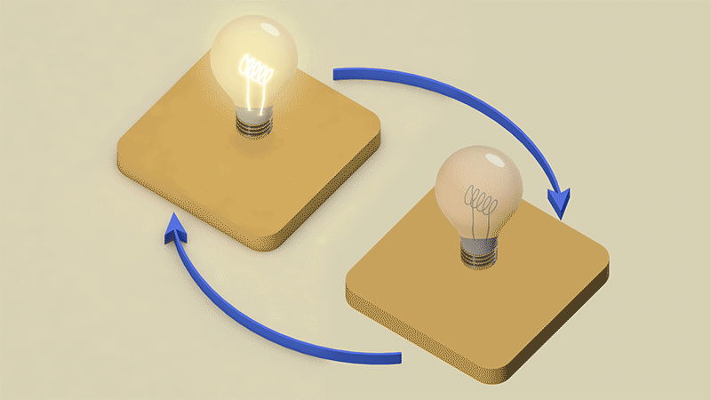
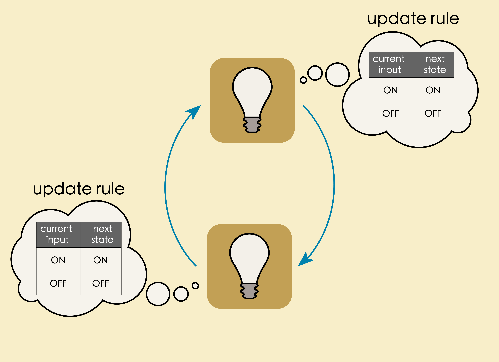
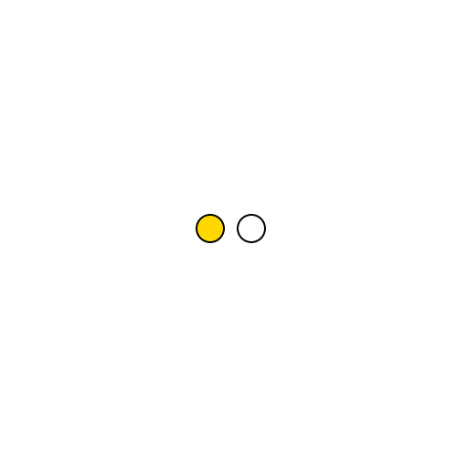
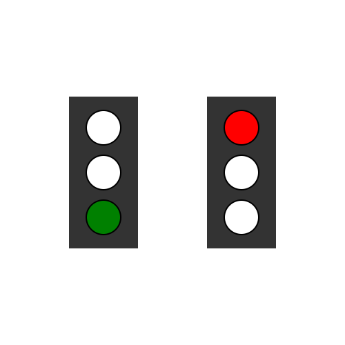
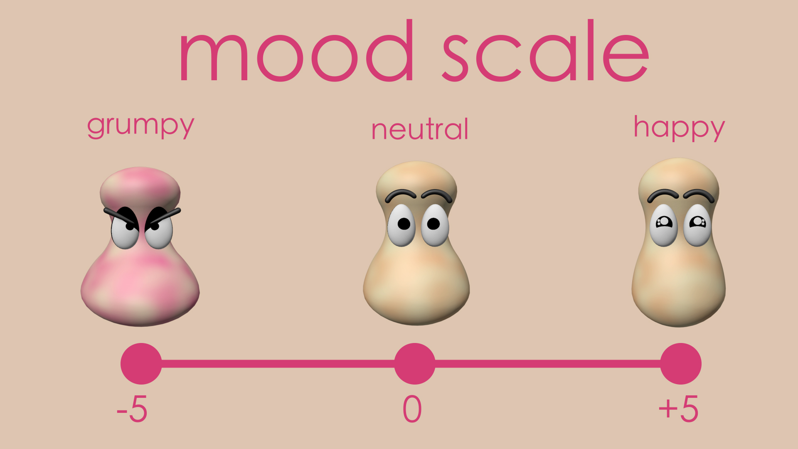
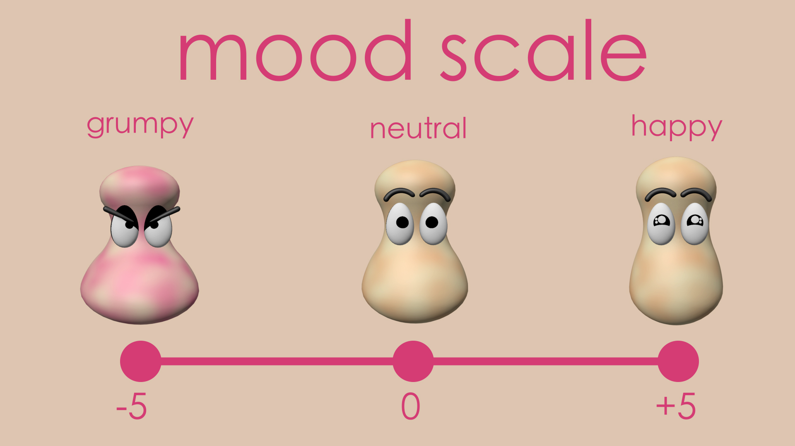
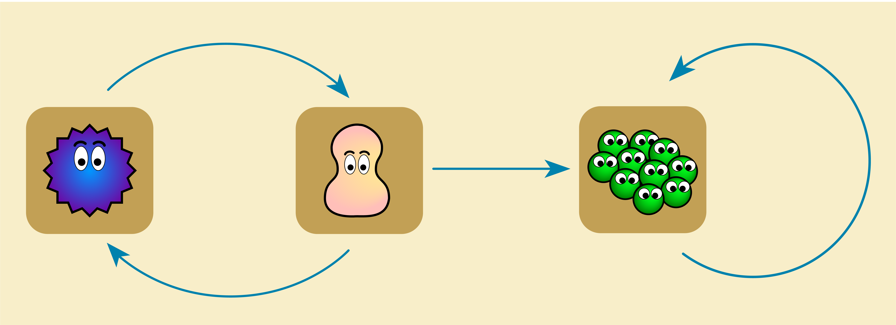

Chapter 2: Dynamical Systems#
Introduction#
Kiki and Bouba are great friends but are quite different characters! It is fun when they meet because Kiki is highly excitable and Bouba prefers to be on the grumpy side! However, they get along with each other quite well! Would it not be interesting to visualize how their mood levels change as they interact?! That is what this chapter is about – visualizing Kiki and Bouba mood levels when they interact using the tools we built in the last chapter!

Making graphs dynamical#
[Message: Graphs are animated when we add “states” to vertices and “update rules” to evolve the states. Simplistically, dynamical systems are animated graphs.]
(Content below will be revisited)
In the previous chapter we learned how to input directed graphs into a computer, but those directed graphs didn’t do anything. In this chapter we’ll bring these graphs to life, animating their evolving states over time.
Recall “example 2” (?) from the last chapter, in which our roommate Tuco took over dishes-duty from me and my wife.

This model had an implicit notion of time. Every day it is somebody’s turn to the dishes and, with each passing day, this status gets updated. One is meant to “read” the diagram in an active way: Look at who’s turn it currently is (“my wife”), then trace along an arrow with your eyes to see who’s turn it will be tomorrow (“me”). Then follow an arrow again to see who’s turn it will be the day after tomorrow (“my wife”). And so on, ad infinitum.
This is an example of what mathematicians call a dynamical system - a system that evolves in time according to formal rules.
But rather than informally reading the system evolution ourselves, we would like to have the computer do it for us. How can we get the computer to simulate this step-by-step updating rule? The underlying directed graph provides a kind of blueprint, capturing the dependencies in our domain of interest. Now we must add some additional information that will allow the simulation process to unfold.
Each vertex in our system will get loaded with a number of “states” and an “update rule” which dictates how those states change over time.
Lightbulbs#
Let’s start with a lightbulb (what could be simpler?). A lightbulb is always in one of two states. It is either OFF or ON:
{kind=link}

We model this using a directed graph in which the lightbulb is a vertex. We then add extra data to this vertex which gives on ON/OFF condition of the lightbulb.
ILLUSTRATION? CODE SHOWING LIGHTBULB ON OR OFF
Of course we cannot yet call this a “dynamical” system. It’s completely static! The lightbulb just stays at whatever we set it to. Let’s make this lightbulb change its state over time.
Flashing light:
Let’s see if we can update our model to have the lighbulb flash on and off, like this:

In order to accomplish this the lightbuble has to consider its present state (say ON) and then decide to change to the opposite state (OFF). This is accomplished with what we call a update rule. Here is the directed graph that models this situation:

The current state information is fedback from the vertex (bulb) to itself through this arrow. The vertex (bulb) will change its state based on the information received – move to OFF if ON is received, move to ON if OFF is received!
We will think of an arrow as sending state value information from its source to its target. In this case, the lightbulb is looking at its own state. The update rule is a lookup table. Whatever the current state of the bulb is, it will be the opposite state in the next time step.
Here’s how we can encode this update rule in Algebraic Julia:
CODE CODE CODE CODE CODE
And we can even export an animation showing that our simulation works!

Two lights:
In the last example the flashing light was a self-contained system. But one of the interesting things about modeling dynamical systems is our ability to make different parts of the system affect one another - that an update rule can take into account that state of OTHER parts of the system.
Suppose we wanted two alternating lightbulbs:
{kind=link}
We can use a directed graph in which each lightbulb sends its state to the other. Each lightbuble uses an update rule in which it “copies” whatever state the other lightbulb is in.
{kind=link}
We can set this up in Algebraic Julia, with one lightbulb initialized on OFF and the other to ON.
CODE CODE CODE CODE
And indeed we get two lightbulbs flashing at each other!
{kind=link}
String of lights:
We might call this update rule the “copy” rule - in which a lightbulb just copies whatever state it recieves as an input. What happens if we string together three copying lightbulbs in a loop?

Now we have a series of cycling lighbulbs in which one of them is always on. This models a familiar object - a traffic light! If we relabel our lights GREEN, YELLOW, and RED, then this model simulates the traffic light’s behavior of cycling through green, yellow, red and back to green.

A smarter traffic light:
In the last example, we got traffic light behavior by letting each lightbulb decide for itself whether to be ON or OFF. We can achieve the same thing by introducing a CONTROL vertex, a mastermind which takes in the the state information from all the lights and decides which ones to turn on and off.
{kind=link}
The control vertex has three states: ON/OFF for the red light, ON/OFF for the yellow light, and ON/OFF for the green light. And it uses a new kind of update rule for the control vertex. Instead of a lookup table it a set of conditionals.
NEED IMAGE DEPICTING INTERNAL STATES AND CONDITIONALS FOR TRAFFIC LIGHT
Update rules can take many forms. Virtually any decision procedure that can be carried out by a computer can be used as an update rule. We can program the above into Algebraic Julia:
CODE CODE CODE CODE
And we get the following simulation:

Two interacting traffic lights:
At an intersection traffic lights come in pairs. It’s mortally important to the drivers that when one traffic light is green the other must be red. We can model this by taking two copies of our traffic light, feed each controller the lightbulb information from the opposite light, and devise a new update rule.

NEED TO SHOW/EXPLAIN UPDATE RULE
CODE CODE CODE
And here’s our simulation:
{kind=link}
Dynamical systems come in two broad flavors - discrete and continuous. Think a “drum vs. a trombone,” “chess vs. billiards” “sugar cubes vs. honey”
The previous examples were all discrete, having binary on/off values changing in distinct time steps. As we mentioned, other dynamical systems of interest might be continuous, with states coming in a range of values that fluctuate smoothly in time. Compare the on/off nature of a light bulb to the height of a falling rock. Such systems can be modeled just as well, as the following example shows.
Mood Swings#
** Kiki and Bouba images
Kiki and Bouba are hanging out. Both friends can show a range of emotions, from grumpy to happy, which we can rate on a scale of -5 to +5:
 

{kind=link}
Bourba is feeling super grouchy today but luckily being around Kiki tends to improve Bourba’s mood. Kiki, on the other hand, is feeling great! Unfortunately, when Bourba is down in the dumps, it really drags down Kiki’s mood too. But when Kiki’s in a bad mood it only makes Bourba feel worse.
How will these friends’ moods interact? Will Kiki manage to cheer Bourba up or will they both end up depressed? Or maybe their moods will alternate back and forth in and endless cycle of cheering up and bumming out:

First, let’s describe the interaction of their moods
The mood change is dependent on three parameters namely susceptibility factor, tolerance levels and calm down rates. Parameter values of a process block remain constant (does not change over time). They can be thought of as weights for the variables (inputs and current state) in the computation of dynamics.
Here is a possible dynamics of mood change in words based on the above assumptions:
At each instant of time, each friend takes in a certain amount of other person’s mood based on their susceptibility. They also release certain amount of their mood based on the calm down rate. If they reach their excitement or grumpiness maximum tolerance levels, then they just calm down; no more interaction!
Here is a mathematical representation of the above dynamics:
if the maximum grumpiness is reached or the maximum excitement is reached then
change in mood = - calm down rate x current mood → The amount by which the current mood moves towards the neutralelse
change_in_mood = - calm down rate x current mood + susceptibility factor x incoming mood → The amount of the incoming mood taken in.
This is how the moods of Kiki and Bourba will change over time. The negative signs in the calculation signifies the direction of change — the decrease in grumpiness or excitement. The calm down rates and susceptibility factors of Kiki and Bourba has values between 0 and 1, inclusive.
New mood level = change in mood + current mood
Kiki independently
{kind=link}
Bouba independently

Kiki & Bouba interactive

Kiki & Bouba & Staff
{kind=link}
Conclusions#
Update rules can be anything - look up tables, logical conditionals, differential equations, automata, recurrence relations, other dynamical systems, etc.?
Preview of more general powerful models in Algebraic Dynamics. Link so Sophie’s assets
Dynamical systems and directed graphs are a useful framework for modeling the world. Indeed, they are a close match for how humans tend to conceptualize things. We instinctively look at the world in terms of cause and effect, in terms of procedures which play out over time, in terms of things-acting-upon-other-things.
But this is just one way of looking at the world. And not all systems are best understood in these terms. In the coming sections we will develop to a more relational approach, a subtle and versatile way of working with graphs having an emphasis on constraints and filters instead of step-by-step procedures. Systems that maintain a kind of equilibrium or balancing act between simultaneous constraints.